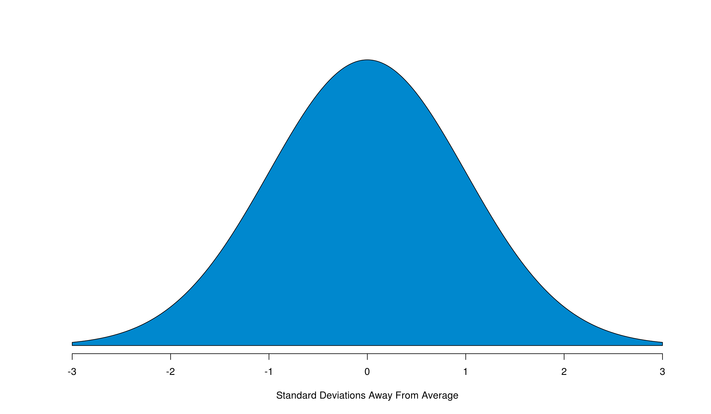
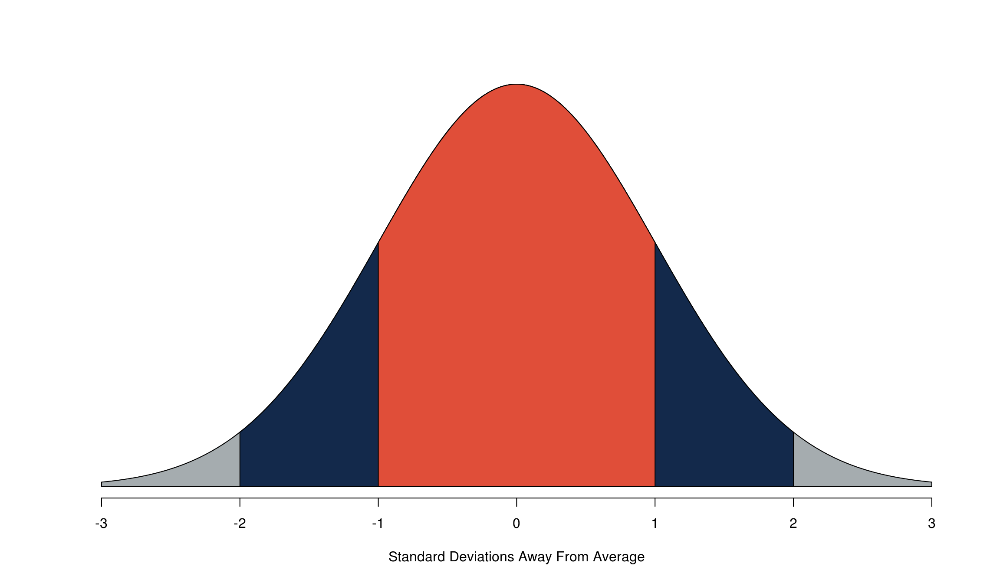
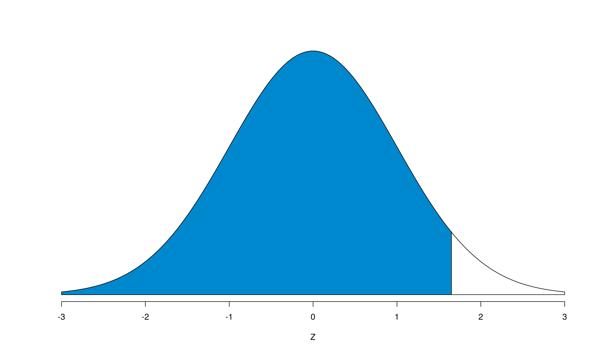

Chapter 10 The Normal Approximation

The ideal histogram will have a bell shape like the one you see above. While not all histograms will have this shape, many will roughly approximate it. This shape is called a normal curve, also referred to as the normal approximation. There’s two major facts that we need to keep in mind about the normal curve:
It’s a symmetric distribution about the center (the average). This fact allows us to apply the logic that whatever we do to one side of the curve, we can safely do to another. We’ll keep coming back to this fact, so it’s really important to keep this in the back of your head.
Just like a histogram, the total area underneath the curve adds to 100%. Again, this is something that we’ll keep coming back to. Burn this fact into your brain too.
A few more things to note about the normal curve:
While on the plot the range of the \(x\)-axis goes from -3 to 3, the curve really extends out forever. It’s asymptotic
It’s a density plot and not a frequency plot (this is what allows the total area to be 100%)
The highest point on our curve occurs at 0. Since the \(x\)-axis is how many standard deviations away from the average a point is, we know then that the curve’s highest point (we say “it’s centered”) around 0
10.1 The SD 1-2-3 Rule

The SD 1-2-3 Rule tells us how much data is within 1, 2, and 3 standard deviations of the average. The orange area of the above normal curve is 1 standard deviation of the average, or roughly 68%. Within 2 standard deviations of the average (the blue area, plus the middle orange area), gives us approximately 95% of the data, and the grey area, plus the orange and blue areas, give 99.7% of the data.
Quick summary:
orange = 68%
orange + blue = 95%
orange + blue + grey = 99%
In other words, 68% of the data is between -1 and 1, 95% of the data is between -2 and 2, and 99% of the data is between -3 and 3.
Now this is great and all, but what about if the data isn’t exactly 1, 2, or 3 standard deviations away from the average? Glad you asked. That’s where Z-scores make their money.
10.2 Z-scores
A Z-score, also known as standard units, is a measure of how many standard deviations away from the average a particular point of data is. Like we just said, every point of data in the data set will correspond to a Z-score. If we want to know how many standard deviations away from the average a point of data is, we should start by figuring out how far the point itself is from the average in whatever units the data’s in (i.e. if we’re talking height, how many inches away from the average is this particular data point?).
\[ \text{Distance from average} = \text{Value} - \text{Average} \]
Then, if we want to figure out how many standard deviations the point (sometimes called \(x\)) is away from the average (occasionally called \(\mu\)), we just need to divide by the standard deviation (SD, AKA \(\sigma\)) is. This is how we get the formula for a Z-score.
\[ Z = \frac{\text{Distance from average}}{SD} = \frac{\text{Value} - \text{Average}}{\text{SD}} = \frac{x - \mu}{\sigma} \]
So, all we need to calculate a Z-score is the data point, the average, and the standard deviation. But then how do we know what the corresponding area is? Luckily, we have this handy chart that tells us the middle area, which is the area between -Z and +Z. What a lifesaver! Just be sure that before you go to that chart, you’ve converted everything to a Z-score. We can then compute the middle areas – and therefore the remaining tails (remember our “area under the curve = 100%” fact?) – for any point in our data set.
{kind=link}
By hand, we can get the middle area from the chart, subtract it from 100% to get the remaining area in both tails, and divide by 2 (thank you curve symmetry!) to get the area of each tail. But that’s not what we’re here to learn: how do we do it in R?
10.3 The _norm() Functions
There are four distinct functions that involve the normal approximation in R:
dnorm()returns the output of something called a density function, which is the equation that produces the normal curve. It needs one argument (x), and plugs it into the density equation. By default, the function’smeanandsdarguments are set to be 0 and 1 respectively, however you can override these defaults to be accurate to your data as needed. Ifxis a vector of numbers (i.e.-3:3), it will return the density function’s output for each number in the vector (thank you vectorization!). This function isn’t incredibly useful in computations, but it’s really useful when you need to plot a normal curve inR.
pnorm()returns the cumulative probability of the normal curve at a given Z-score (It’s the area to the left of Z). Graphically, at an arbitrary Z-value, it returns the blue shaded area seen here:
pnorm() Output

This is the one that we’re going to want to use the most, but we have to modify it a little bit to reproduce both what we’ve learned in class and from the chart. This will appear later (and make your life easier too), but for now we need to adapt it to find middle areas. Luckily, it’s not a hard conversion, and we’ll make use of our two facts from before.
To get the middle area, we first need to realize that the upper bound of it (the right side on the normal curve) will always have a positive Z-score. Consequently, the lower bound will always have a negative Z-score. The symmetry of the curve tells us that Z-score on the right has to be the same (but opposite sign) as the Z-score on the left. This makes our calculation of the middle area easy: pnorm(positive z-score) - pnorm(negative z-score). If you want this value to be a percentage and exactly match the chart, take this output and multiply it by 100. Then, to get the tails, you simply take 100% (or 1 if you’re using the direct output) and subtract away the middle area, divide by two, and you’ve got everything you need.
qnorm()does the opposite ofpnorm(): you supply it an area-to-the-left (out of 1) for which you’d like to know the corresponding Z-score, and it tells you what that Z-score is. For example, if we wanted to know what area gave us 95% to the left (or a 5% tail) quickly, we can find it with one line of code.
qnorm(.95)## [1] 1.644854Do a quick check by hand with the chart, and you should see that the middle area of 1.65 does in fact give us an upper (and lower) tail of 5%.
rnorm()is basically a random number generator. (The numbers are actually pseudo-random, but the patterns that they come from are not obvious, so we consider them random.) For this class, it won’t be particularly useful, but the more you learn in statistics andRthe more useful this function will become. We may use it from time to time going forward to help us do a few things, so it’s worth mentioning now. Also worth mentioning is that this function won’t produce the same output every time you run it since, after all, it is a random number generator. To ensure reproducability of your code, it’s a good habit to set the seed, or starting value, of the random number generator withset.seed(). By supplying it an argument of any integer, it generates that many random numbers from a normal distribution.meanandsdagain default to 0 and 1 respectively, but you can override these if you’d like.
rnorm(3)## [1] -0.2526931 1.6663585 -0.3912562rnorm(3)## [1] -0.7096133 -0.7178037 0.2683795rnorm(3)## [1] -0.18863875 0.06873817 -1.87602649Now, if we set a seed, we should get the same results every time as long as we set the seed every time we want the same numbers.
set.seed(123456789)
rnorm(3)## [1] 0.5048723 0.3958758 1.4155378# This one should give different numbers
rnorm(3)## [1] -0.7223243 -0.6183570 -1.5626204# Back to the same numbers
set.seed(123456789)
rnorm(3)## [1] 0.5048723 0.3958758 1.4155378# One more time
set.seed(123456789)
rnorm(3)## [1] 0.5048723 0.3958758 1.4155378